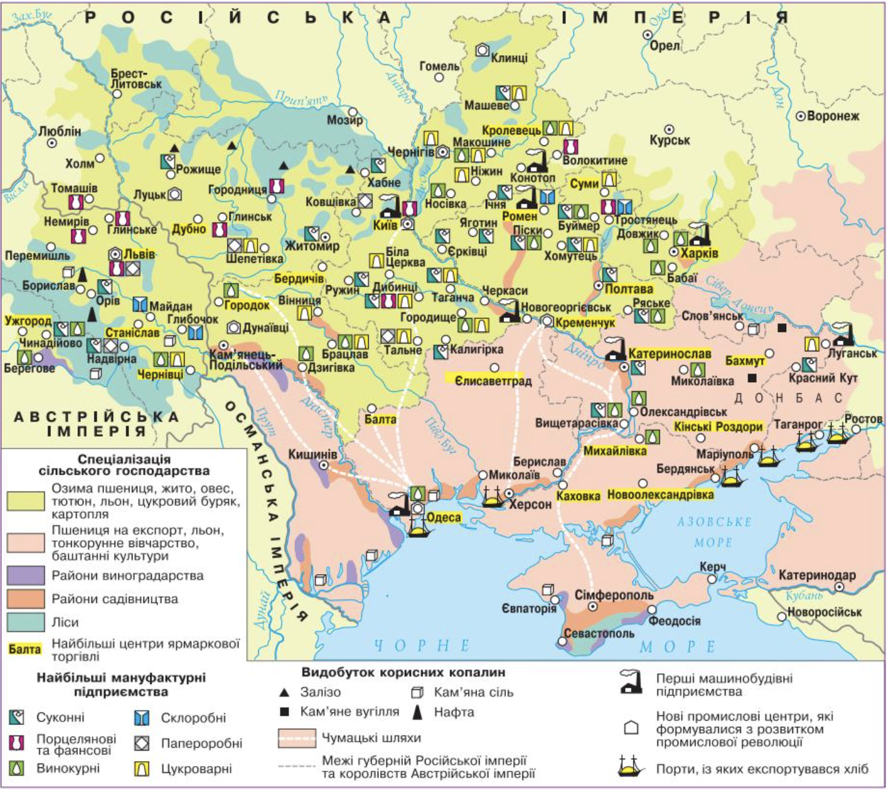

Що робили в різних частинах України 200 років тому
Подивись на карту.
Знайди свій регіон.
Натисни правильну відповідь.
Зелений колір — правильно! Якщо ні — спробуй ще раз.

🎉 Молодець! Ти виконав все завдання!
Почати спочатку